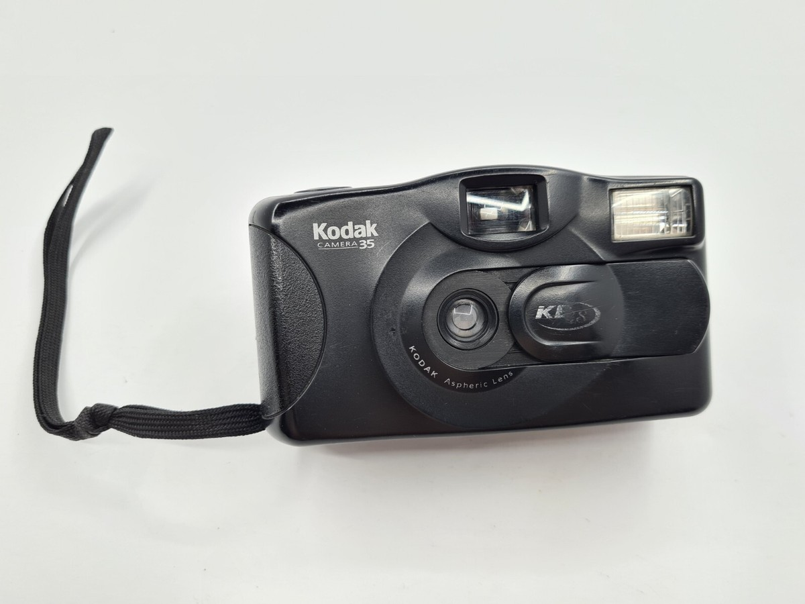

Kodak
Kodak camera revoluntionized society by democratizing photography, making it accessible to the public through esay-to-use, affordable camera and the phrase "You press the button, we do the rest" philosophy.
Kodak camera revoluntionized society by democratizing photography, making it accessible to the public through esay-to-use, affordable camera and the phrase "You press the button, we do the rest" philosophy.
One thing that Canon consistently excels at is ergonomics. The company's cameras are known for their comfortable and intuitive design, making them a pleasure to use for photographers. One major advantage of Canon is their high-quality lenses, which are widely recognized as some of the best in the industry.
Nikon's products include cameras, camera lenses, binoculars, microscopes, ophthalmic lenses, measurement instruments, rifle scopes, spotting scopes, and equipment related to semiconductor fabrication, such as steppers used in the photolithography steps of such manufacturing.
Modern smartphone cameras are well used for everything from daily casual snaps to professional-level content. Thanks to powerful AI, multiple lenses, computational photography and easy sharing via socail media apps sharing via social media apps like Instagram and TikTok, effecitvely replacing dedicated cameras for most people by integraing advanced hardware with sophisticated software for stunning results anytime, anywhere.